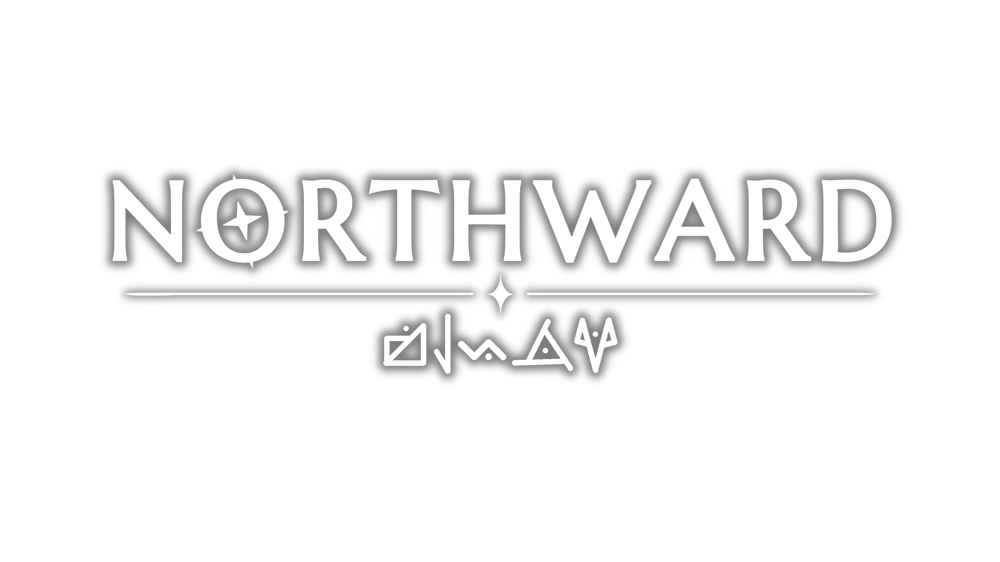

Description
Northward is an open world sea-voyage adventure where you set sail, alone or together, from island to island on upgradeable ships driven by wind or steam, fighting with and against nature to explore the uncharted, find lost treasures and uncover ancient mysteries.
History
In April of 2021, Marcus Karåker and Filip Bergqvist sat down to try and decide what game to make. They made a list of about 20 different ideas, each of which they scored 0-10 in three categories: scope (how long they thought it would take), commercial viablity (how well they thought it would do on the market) and passion (how much they were excited about working on that idea). They then ranked each idea based on an average of the three scores. On the top of the list: a multipalyer boat exploration game with fishing mechanics. This decision would shape the next 5 years of their lives. They spent the evenings and weekends working on the game, and made slow but steady progress, until development accelerated in 2026.
Features
- Captain Your Own Vessel! Sail the seas on your very own ship. Single-player or multi-player. Find upgrades to go further and furniture to make it more cozy. The occasional adventurer may even want to join your crew!
- Mysteries of a Fallen Star... Awaken dormant magics, and uncover the mysteries surrounding a long lost civilization and a fallen star.
- Survive the Northern Climate. Make a campfire, cook some newly caught fish, and put on your boots and thick coat as the temperature drops.
- Explore Different Biomes. Climb the highest peaks, dive into the deepest oceans, and beware the leviathans that dwell there. The northern archipelago's various environments will demand preparation and creative solutions.
Videos
— YouTube
Images
{kind=link}
{kind=link}
Logo & Icon
{kind=link}

Widgets
About Yore & Yonder
- Boilerplate
- Yore & Yonder is a Stockholm based game development studio working on the up-coming sailing exploration game, Northward.
- More information
- More information on Yore & Yonder, our logo & relevant media are available here.
Northward Credits
- Marcus Karåker
- Creative Director, co-founder
- Filip Bergqvist
- Tech Director, co-founder
- Axel Olsson (@Warpsence)
- Music & Sound
- David Stenfors
- Animation